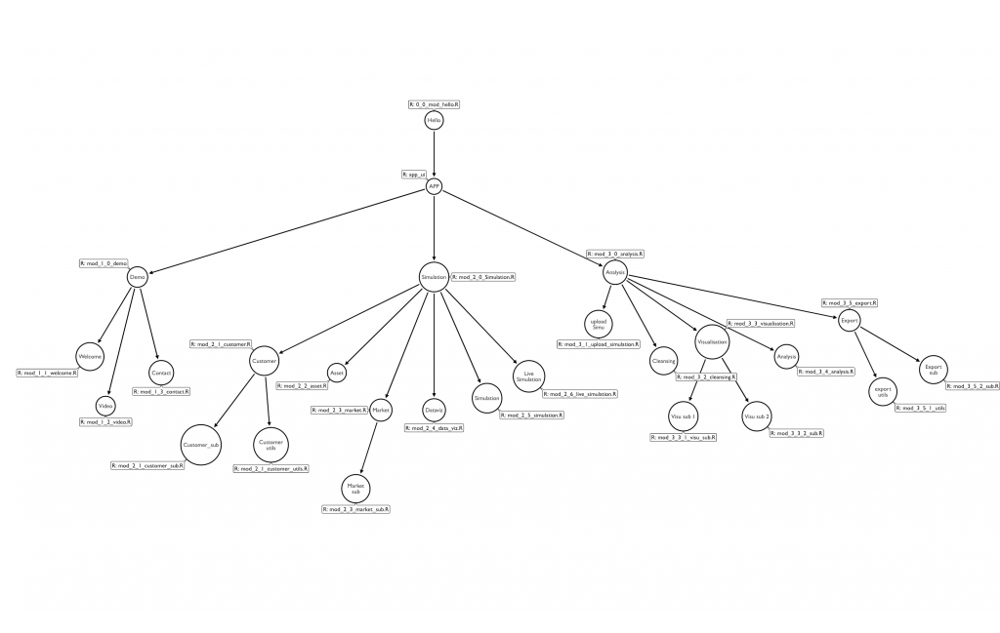

Chapter 2 Planning Ahead
2.1 Working with a “long-term” mindset
“Rome ne fut pas faite toute en un jour”
French proverb
2.1.1 Prepare for success
Whatever are your ambitions for your Shiny application, you should take a little time to set robust foundations that will save a lot of time in the future. A common thing you will hear about Shiny is that it is a good prototyping tool. This can not be denied. Building a Proof of Concept (POC) for an app is relatively easy if you compare to what it needs when building applications in other languages. With Shiny, you can build a “it works on my machine” web application in a couple of hours, and show it to your team, your boss, your investors… Thanks to the way Shiny is built, you do not have to care about websocket, ports, html, JavaScript, libraries, and all the things that are elegantly bundled straight into Shiny.
Hence, you can have a quick, hacky application that will work on your machine, and that, very rapidly. But that is not the way you should start. Indeed, starting with hacky foundations will lead to two possibilities:
- You will have to rewrite everything from scratch to have a robust application for production.
- If you do not want to do that, you will get stucked with a legacy code base for the app that is built on top of hacky functions.
The idea there is that even if Shiny is a good tool for prototyping, there is no harm in starting your application on solid ground, even for a prototype.
In this book, we will present a framework called {golem}, which is a toolbox for building production-grade Shiny applications.
Even if {golem} is focused on production, there is no reason not to use it for your proof of concepts: starting a new {golem} project is relatively straightforward, and even if you do not use the advanced features, you can use it for very small apps.
That way, you are getting ready for complexity, and if, one day, you need to turn this small app into a production app, the foundations are there.
2.1.2 Develop with the KISS principle
The KISS principle, as “Keep It Simple, Stupid”, should drive the implementation of features in the application to allow anyone in the future, including original developers, to take over on the development.
Deeply rooted in the Unix Philosophy, the KISS principle states that most systems work best if they are kept simple rather than made complicated; therefore, simplicity should be a key goal in design, and unnecessary complexity should be avoided.
The story behind this principle is supposed to be that Kelly Johnson, lead engineer at the Lockheed Skunk Works, gave his workers a set of very common tools and said that the airplanes should be repairable with these tools, and these tools only. The idea behind this being that repairing an aircraft should be possible for any average engineer.
This should be a principle to keep in mind when building application.
Indeed, large scale Shiny projects can lead to many people working on the code base, for a long period of time.
Many people means a variety of skills, with some common ground in Shiny development.
So when choosing how and what to implement, try to make a rule to go for the simplest solution11, i.e. the one that any common Shiny Developer would be able to understand and maintain.
If you go for an exotic solution or a complex technology, be sure that you are doing it for a good reason: unknown or hard to grasp technology reduce the chance of finding someone that will be able to maintain that piece of code in the future.
2.2 Working as a team: tools & organisation
Working as a team, whatever the coding project, requires adequate tools, discipline and organisation. Complex Shiny Apps usually imply that several people will work on the application. For example, at ThinkR, 3 to 4 people usually work in parallel on the same application, but there might be more people involved on larger projects. The choice of tools and organisation is crucial for a successful application.
2.2.1 From the tools point of view
2.2.1.1 Version Control & Test all the things
To get informed about a code break during development, you will need to write tests for your app, and use continuous integration (CI) so that you are sure this is automatically detected12. When you are working on a complex application, chances are that you will be working on it for a significant period of time, meaning that you will write code, modify it, use it, go back to it after a few weeks, change some other things, and probably break things. Breaking things is a natural process of software engineering, notably when working on a piece of code during a long period. Remember the last chapter where we defined that complex applications are too large to be understood fully? Adding code that breaks the codebase will happen with complex app, so the sooner you take measure to solve code break, the better.
As you can not prevent code to break, you should at least get the tooling to:
- Be informed that the code has broken: this is the role of tests combined with CI
- Be able to identify changes between versions, and potentially, get back in time to a previous code base: this is the role of version control
We will go deeper into testing and version control in chapter 14.
2.2.1.2 Small is beautiful
Building an application with multiple small and independant pieces will lighten your development process and your mental load.
Previous chapter introduced the notion of complexity in size, where the app grows so large that it is very hard to have a good grasp of it.
A large code base implies that the safe way to work is to split the app into pieces as much as possible.
Splitting a Shiny project is made possible by following two techniques:
- Split your app into Shiny Modules, so that your app can be though of as a tree, making it possible for every developer to concentrate on one node, and only one, instead of having to think about the global infrastructure when implementing features

- Extract your core “non-reactive” functions, that we will also call the “business logic”, and include them in external files, so that you can work on these outside of the app. Working on independent static files to implement features will prevent you to relaunch the whole application every time you need to add something new.
We will get back to Shiny module and how to organized your project in the next chapter.
2.2.2 From the organisational point of view
We recommend to define two kind of developers: a unique person (or maybe two) to be in charge of supervising the whole project and developers of single functionalities. Management of the project and the communication between the two developers types will be defined around the tools, like git and its graphical interfaces.
2.2.2.1 A person in charge
As the person in charge of the development, you will have an overview of the entire project and manage the team so that all developers create pieces of the application that correctly fit together.
It is hard to have the complete picture of what the app is doing everywhere. Most of the time, it is not necessary for all developers to have this complete picture. Defining a unique person in charge mentally loads a unique developer. You will have to get the whole picture: what each part of the software is doing, how to make everything working together, avoid development conflicts, and of course check that, at the end of the day, the results returned by the complete application are the correct ones.
You will be the one that kicks off the project and write the first draft of the application.
If you follow the workflow we will describe in this book, you will create a {golem} project, fill the information, and define the application structure by providing the main modules and the prototype of the app.
Once the skeleton of the app is created, list a series of small tasks to be accomplished. We strongly suggest to use git with a graphical interface (Gitlab, Github, Bitbucket, …). Versionning with git can easily be integrated with R. The graphical interface of these services will help you manage the project. The small tasks are defined as issues in the git graphical interface and will be closed during development, while referred to specific modifications of the code (through commits). You will also be able to set continuous integration, as recommended above, to test developers work before integration in the main development branch.
If you follow a git flow (described in chapter \@(ref: secure)) version control workflow, you will also be in charge of reviewing and accepting the pull/merge requests to the main dev branch if they solve the associated issues.
Note that you can also be part of the developers.
This may indeed be a recommendation as you will directly face difficulties if they arise.
However, you will need to be careful in the code review process by assigning someone else to check your work.
Do not worry if this sounds like a foreign language to you, we will get back to this method later in this book (chapter \@(ref: secure)).
Note that other management tools can be used there: for example redmine, jira, or any issue tracking software can play this role.
2.2.2.2 Developers
As a developer, you will focus on small functionnalities, make sure to protect your work with tests and verify that your implementations do not break others work. If the person in charge correctly splitted the work between developers of the team, you will probably be focusing on one or more parts of the application, but you do not need to know every single bit of what the application is doing. In a perfect world, the application is split in various Shiny Modules, one module equals one file and each member of the team will be assigned a safe development of one or more modules.
It is simpler to work in this context where one developer is assigned to one module, although we know that in reality it may be a little more complex, and several members of the team might go back and forth working on a common module. But, the person in charge will be there to help make all the pieces to fit together.